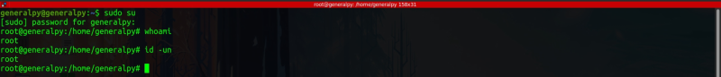
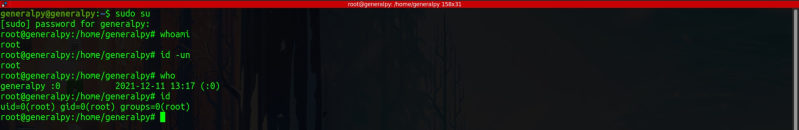
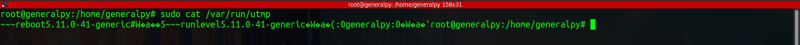
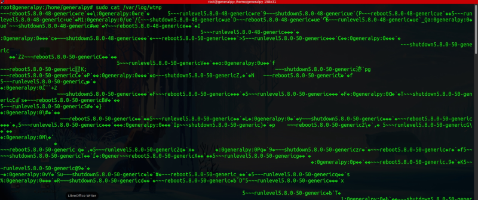
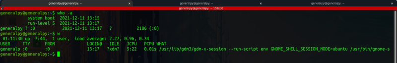
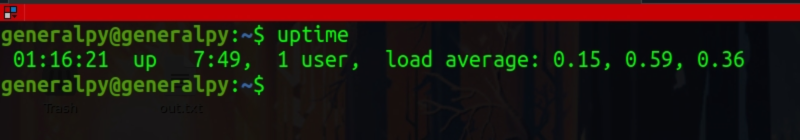
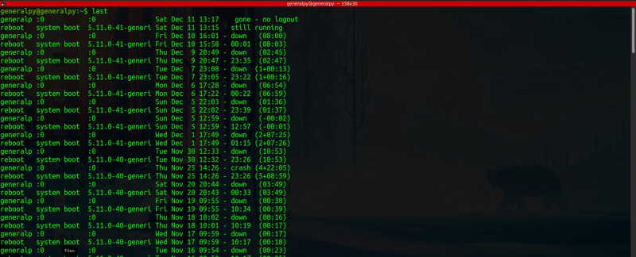

In linux, any user can login at any time using su command which can sometimes make tracking of user activity hard. So to tackle this, linux store 2 type of user ids. First is Real User ID(RUID) and second one is Effective User ID(EUID).
RUID is of the user who initially logs in and EUID changes according to user switching. Let us assume we initially log in as generalpy and then switch to apple. Here RUID is of generalpy and EUID is of apple.
whoami command is used to print name of effective user. It is same as runnign id -un.

who command is used to print info about the real user.
id command without any flags is used to print username and groups for effective user.

who command simply parses and prints contents of /var/run/utmp file. That file stores current user logs of the system.

/var/log/wtmp which is like a history file which stores all users login and logout activity in the past. It is like a history for utmp file.

We can use who with -a flag to show more info about the real user.
A simple w command shows who is logged in to pc and what they are currently doing.

In output of w command, in first line, first field shows current time, second field shows total system uptime which is 7 hrs 44 min in our case and the load average field shows load on system in last 1 min, 5 mins and 15 mins. It must be less than 1. If it is more than 1 that means there is some problem.
We can get the system uptime and other info by using uptime command.

The user sessions are written into a file named /var/log/wtmp file. The last command shows last lines of that file. It can be used to track any malicious activity.
Records are printed in reverse order.

To get user specific details, give name of user to last command.